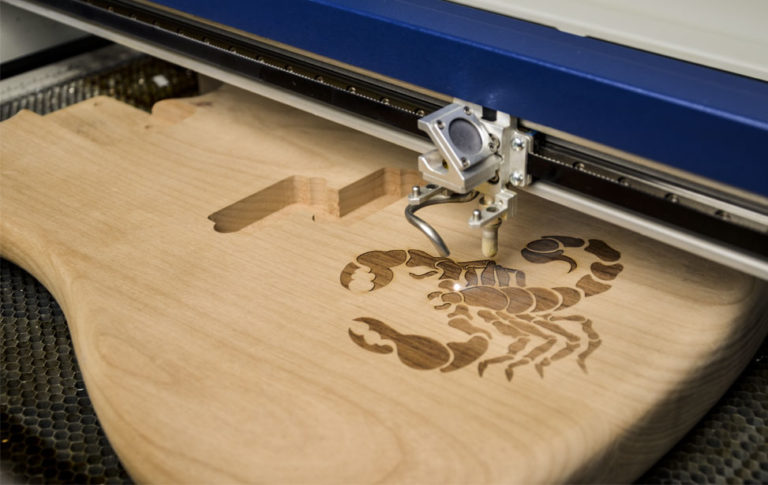

the idea of project
Unlike professional laser machines, which are used for cutting the challenging materials such as metals, a DIY Laser Engraver use a low to medium power laser that can engrave or cut only thin materials like leather, plywood, acrylic, cardboard.
Components
1- Arduino Nano (with USB cable)
2- 2x DVD drive stepper mechanism
3- 2x A4988 stepper motor driver modules (or GRBL shield)
4- 250mW Laser with adjustable lens (or above)
5- 12v 2Amps power supply minimum
6- 1x IRFZ44N N-CHANNEL Mosfet
7- 1x 10k resistor
8- 1x 47ohm resistor
9- 1x LM7805 voltage regulator (with heatsink)
10- Blank PCB Board
11- Male and Female Headers
12- 2.5mm JST XH-Style
13- 2pin male connector
14- 1x 1000uf 16v capacitor Jumper cables
15- 8x small neodymium magnets ( which I have salvaged from DVD lens mechanism)
16- x 2pin plug in screw terminal block connector
17- Zip ties (100mm)
18- Super Glue
19- 6x M3x12 screws
20- 8x M2x5 screws
21- Laser Safety Glasses
Software
1- Solidwprks